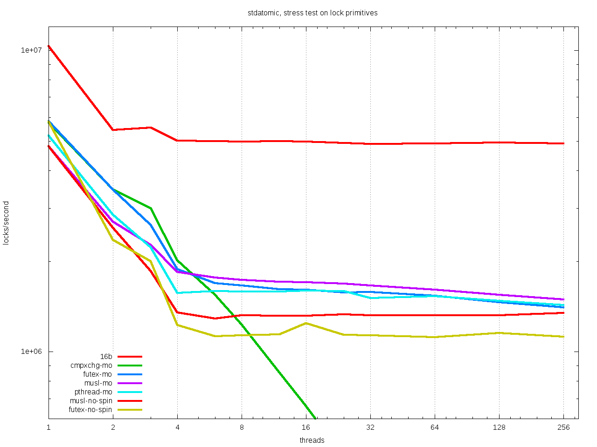
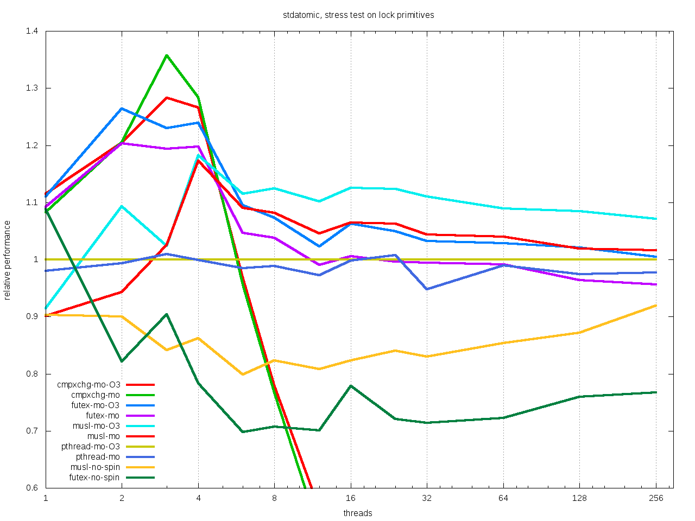

An implementation of the C11 <stdatomic.h> interface
Table of Contents
1 Short description
The implementation of the C11 atomic interface typically sits between the implementation of the core language by the C compiler and the implementation of the C library. It needs compiler support for the individual atomic operations and library supports for the cases where no low-level atomic instruction is available and a lock must be taken.
- This implementation builds entirely on the two gcc ABIs for atomics. It doesn't even attempt to go down to assembly level by itself.
- We provide all function interfaces that the two gcc ABIs and the C standard need.
- For compilers that don't offer the direct language support for atomics this provides a reduced but fully functional approach to atomic operations.
2 Implemented library features
We distinguish between the implementation of library functions and
the <stdatomic.h> header file.
The latter already contains a lot of intelligence, because it has to do type generic stuff. This is more involved than usual C library header files.
The header file is optional, the created function interface should be compatible with the header files that gcc and clang may provide.
2.1 Type, constants and function interfaces
These are the types and proper functions that are foreseen by the standard:
atomic_flagand its four functions- the
memory_orderenumeration type - fences
- object-like macros to test for lock-freeness and similar things
typedeffor atomic integer and pointer types.
All of these are provided in forms that are compatible with gcc and clang.
2.2 Type generic functions
These are all implemented as macros, and should in many cases result in optimized inlined assembler instructions, and not in library calls. Library calls are only needed as fall back, when there is no reasonable instruction set available.
This implementation uses predefined macros of the form
__GCC_HAVE_SYNC_COMPARE_AND_SWAP_X
where X can be one of 1, 2, 4, 8 or 16. All versions of gcc and
clang since at least ten years implement these macros and the
underlying operations consistently.
If that macro exists, we suppose that the compiler is able to
synthesize all corresponding memory functions for types of size X
and all necessary arithmetic function for integer types of that
size, as lock-free (= stateless) instructions.
This doesn't mean that there are direct assembler instruction for
all these operations. They can well be implemented as an unbounded
loop that uses a compare_and_swap (CAS) primitive for atomic
exchange. Gcc typically does this for the less common atomic
arithmetic instructions such as atomic_fetch_and, for
example. Lock-free doesn't mean a bounded number of instructions.
For the operations that cannot be mapped to assembler instructions
the compiler inserts calls to external functions. The names for
these functions are typically composed of the operation and
prefixed either by __sync_ (the older gcc ABI) or __atomic_
(the newer gcc ABI). The names of these calls can be suffixed by
_X for X as above if this concerns an operation on a type of
the corresponding width.
All external functions that the gcc ABI's require are provided.
2.2.1 The __atomic_ ABI
is already close to the C11 call interface. Relevant for C11 are 9 operations
fetch_addfor integer addition, returning the previous valuefetch_subfor integer subtraction, returning the previous valuefetch_orfor bitwise or, returning the previous valuefetch_andfor bitwise and, returning the previous valuefetch_xorfor bitwise xor, returning the previous valueloadfor an atomic load operationstorefor an atomic store operationexchangefor an atomic exchange operation, equivalent to astorethat returns the previous valuecompare_exchangefor an atomic compare and exchange operation, equivalent to a conditionalstorethat also saves the previous value, and returnsfalseortrueaccording to the success of the condition.
In addition to the more or less obvious operands, the built-in
functions take one or two additional parameters that reflect an
eventual requirement for the memory_order of the operation. So
the functions represent the C11 "explicit" features such as
atomic_fetch_add_explicit.
Observe that the built-in functions only foresee one interface
compare_exchange.
- The distinction between "weak" and "strong" versions of these built-in functions are ruled through an additional parameter, not through a different function interface.
- The function symbol fall-back
__atomic_compare_exchangeconfusingly has a different semantic and prototype than the built-in function. It misses the parameter to chose between the "weak" and the "strong" version, and solely corresponds to the C11 operationatomic_compare_exchange_strong_explicit
Load, store and compare operations have memory semantics, that is
they are equivalent to the use of memcpy and memcmp library
functions. The implementation may use = or == operators in some
places for optimization, but it then does so with objects of
uintXX_t, so every bit is accounted for. For data types where
memory and value comparison are different, the result of an
atomic_compare_exchange operation can be different than you'd
expect:
_Boolobjects where other bits than the lowest-order bit have been polluted, will not compare equal tofalseortrue.- Floating point types may compare different representations of
0not to be equal. - Two floating point
NaNmay compare equal, though as value comparisonNaNnever compares equal to anything. - Objects of
structoruniontype may be considered unequal because they differ on some padding bytes.
This behavior is in alignment with the intended interpretation by the C and C++ standard's committees.
Function call interfaces for the arithmetic operations are only
generated if we can suppose that an integer type for the
corresponding size exists. We can reasonably assume that there are
always types uint8_t, uint16_t, uint32_t and uint64_t, so
the variants for 1, 2, 4 and 8 can always be generated.
For a 128 bit type these are only generated if __SIZEOF_INT128__
or __GCC_HAVE_SYNC_COMPARE_AND_SWAP_X exist. If so, we assume
that __uint128_t is such an integer type and known to the
compiler.
Arithmetic operations can safely use these uintXX_t types
internally, since the standard imposes two's complement
representation for signed atomic types and also enforces that
atomic operations may not produce traps on overflow.
Additionally to the operations that have generic function interfaces in the C11 standard, gcc additionally implements six other built-ins, namely
__atomic_add_fetchfor integer addition, returning the updated value__atomic_sub_fetchfor integer subtraction, returning the updated value__atomic_or_fetchfor bitwise or, returning the updated value__atomic_and_fetchfor bitwise and, returning the updated value__atomic_xor_fetchfor bitwise xor, returning the updated value__atomic_fetch_nandfor bitwise nand (x = ~(x & v)), returning the previous value__atomic_nand_fetchfor bitwise nand (x = ~(x & v)), returning the updated value
For the completeness of the library interface we supply analogous
functions with the _X suffix for these. They might be called by
the compiler if the user code uses assign and add or similar
operators on atomic integers. The __atomic_add_fetch and
__atomic_sub_fetch functions may also eventually be used by the
compiler to implement an atomic prefix increment or decrement
operation (++x and --x). This would e.g happen if x is an
object of type __int128_t and the platform doesn't implement
lock-free atomics for types of size 16.
2.2.2 Clang's __c11_atomic built-ins
Clang has gone a different path for the built-ins that implement
C11 atomics, prefixed with __c11_atomic. These are a directly
feature equivalent to the C11 generic functions that have
memory_order arguments (_explicit suffix).
For the cases that no atomic instructions can be synthesized,
clang falls back to the same external calls as described for gcc's
__atomic ABI.
2.2.3 The __sync ABI
It dates back long before the C11 atomic interface had been designed and thus cannot be directly conforming to it. It has basically the same built-ins for arithmetic types as above, only that
- The functions are named a bit differently.
- They only implement sequential consistency.
- There are no
load,storeorexchangefeatures. - The
nandoperations changed their meaning from version 4.4 onward. Therefore this operation cannot be used portably in an environment that might use different versions of compilers. So we don't implement these function interfaces and we deprecate the use of this built-in.
Additionally this interface also implements a test_and_set
functionality that is used to implement the atomic_flag
functions. This built-in is documented to have acquire-release
consistency. If used with sequential consistency, an additional
fence is inserted to ensure that.
These features are sufficient to provide a decent implementation of C11 atomics.
2.2.4 The lock-full fallback functions
In absence of proper architecture support, all fallbacks (for
the three built-in families) with _X suffix use the ones without
suffix underneath. These external interfaces receive the size of
the data type as an additional, leading parameter:
__atomic_load__atomic_store__atomic_exchange__atomic_compare_exchange
They have pure memory semantics and their basic operations are
memcpy and memcmp for load, store and comparison.
These functions cannot be called directly from within your code, because the compiler cannot distinguish them from the gcc built-ins, and they have different prototypes than these.
We implement these functions as critical sections that are protected with a lock, similar to a mutex. This implementations uses a table of locks and a hash function to choose one of the entries that only depends on the address of the atomic object.
At the moment, this implementation has several address-hash functions that can be chosen a library-compile time. Any function that mixes the bits of the address should perform reasonably well.
More important for performance is the choice of the lock. Such a lock can be relatively simple, since C11 atomics that are not lock-free don't have to be asynchronous signal safe.
There are several possibilities, in order of preference:
- An OS specific light-weighted lock with non-active waits. The
integration into
musluses Linux'futexunderneath to do an efficient wait. If by coincidence these are called in an un-threaded process, they are close to non-ops. - C11's
mtx_ttype has an shallow interface that should allow it to be implemented a bit simpler and efficient than OS specific mutexes that implement a lot of functionality. This solution should be portable to all platforms that implement this part of C11. In a relatively near future these could be all POSIX and Windows platforms. This approach has the disadvantage that a table ofmtx_tmust be initialized at process startup becausemtx_tdoesn't guarantee static initialization. - POSIX'
pthread_mutex_tis a little less portable, but allows for static initialization. - A spinlock similar to
atomic_flag. Such an approach is portable to all platforms that implement atomics and allows for static initialization. This is the only choice when compiled without OS or library support.The wait functionality is an active wait, that burns CPU cycles and memory bandwidth. In many circumstances this should do well, the critical sections that are protected by this are nice and small.
3 The <stdatomic.h> header file
3.1 Full C11 support
Versions of gcc and clang that fully implement the C11 atomics interface will not need a special header file but can use their own that is shipped with the compiler:
- gcc starting with version 4.9
- clang starting with version 3.6
This full support of atomics allows to use atomic objects just as other objects it whatever operations the base type supports.
These default operations on atomics use sequential consistency. That is, each such an operation will enforce a full memory transfer and the perceived effect is as if all these operations, even if issued in different threads, have been done one after another. Thus, thread parallelism can only play between such operations:
atomics operations are expensive
The functional interfaces with different memory_order arguments
(_explicit suffix to the name) that we described above may be used
to milder the memory effect that atomic operations have. The
possible gain of such different memory consistency models are very
architecture dependent. E.g on the x86 platforms they offer almost
no advantage, whereas on ARM platforms acquire/release semantics may
bring some noticeable gain.
But beware that this gain is bought with a sensible complexification of the code. Only use this if the atomic operations are a measurable performance bottleneck and you already have reduced the number of these operations to a minimum.
3.2 Partial C11 atomics support
A series of compiler versions offers partial atomics support that already implements most of the C11 semantic:
- gcc versions 4.7 and 4.8
- clang versions 3.2 to 3.5
The versions provide the built-in functions as described above but lack full compiler support for atomic types and operations.
With the <stdatomic.h> header that we supply for these compilers,
application code can use the functional interfaces. A macro
_Atomic(T) is provided that can be used to issue emulated
declarations of atomic types that should be forward compatible to
platforms with complete C11 atomics support. Example:
// global variables _Atomic(size_t) thread_inside_count = ATOMIC_VAR_INIT(0); _Atomic(size_t) thread_total_count = ATOMIC_VAR_INIT(1); int my_thread_function(void* arg) { atomic_fetch_add(&thread_inside_count, 1); atomic_fetch_add(&thread_total_count, 1); // do something complicated here // at the end atomic_fetch_sub(&thread_inside_count, 1); }
Underneath such emulated atomic objects are implemented as arrays of
volatile base type of size 1. This has the following sought
effects:
- They can't be assigned to.
- They evaluate to a pointer in almost any context.
- Operations with them cannot be reordered by the compiler.
So you should be relatively safe from programming errors that would access such objects without passing through the type generic atomic functions. The compiler will error out on improper usage of such atomic objects, but the diagnostics may be a bit crude.
3.2.1 Issues
Since this approach may reinterpret data through pointer casts, it could potentially be dangerous. So let us discuss the possible issues.
- The generic fallbacks for memory access only use
memcpyandmemcmpto access the data itself. So the access of the data is within the constraints of the standard. - The generic fallbacks for memory access ensure that their arguments have compatible base types (if a pointer is passed in) or are assignment compatible with the base type of the atomic (if a value is passed in). So data that is copied across can never be misinterpreted as being of a wrong type because the two target types are compatible.
- The specialized functions with
_Xsuffix may reinterpret their data as the correspondinguintXX_tfor the size. Copying or comparing such data is always guaranteed to use all bits, so in that sense it is equivalent tomemcpyandmemcmp. - The arithmetic operations that are executed then are operations on an unsigned integer type that has no padding bits. This arithmetic is compatible for all integer types that have no padding bits and, for the signed types, are represented with two's complement.
- An emulated atomic with this approach is implemented as an array to the base type, and so in the user code the base type of the object remains visible to the compiler. As a consequence this approach has no effect on the aliasing rules, the compiler always has complete information about the type of each object.
The only potential problem for our approach that remains is
alignment. Since the stub functions that are provided may use
casts to uintXX_t of "atomic" objects you have to ensure that
these objects are at least aligned as these types would be. This
should not be a problem, if the base type is an integer type,
too. Integer types with same size should have the same alignment.
If you encounter problems with a user defined type that has a size that is a small power of two you could force alignment
_Alignas(sizeof(toto)) _Atomic(toto) toto1; __attribute__((__aligned__(sizeof(toto)))) _Atomic(toto) toto2;
with whatever of the two constructs works for you.
I am currently struggling to provide a version of the _Atomic(T)
macro that ensures that automatically. It seems to be possible but
produces a lot of noise for function parameters that are pointers
to atomics.
3.3 Basic atomics support
Even older versions of gcc and clang implement the __sync built-in
functions and can thereby made to accept the same <stdatomic.h>
header as discussed above. Since, as their names indicate, these
built-ins only have fully synchronizing versions, they will not be
able to take advantage of the different consistency models. But
implementing atomics with stronger consistency than required, here
sequential consistency, only, is conforming to the C standard.
4 The implementation
4.1 Requirements
4.1.1 Compilers
You should be able to compile this implementation with any version of modern gcc and clang. (Versions are hard to tell, gcc should work for 4.1) The quality of the resulting binary will depend on the implementation of atomic support by the compiler.
There are three different implementations, for modern clang and gcc,
and one for those compilers that only support the __sync_
built-ins. They are only tested with clang and gcc, but might work
with other compilers that implement one of the sets of built-ins and
is otherwise compatible to some gcc extensions:
- compound expressions with
({ }) __typeof____attribute__((__unused__))__builtin_choose_exprfor the__syncversion as a precursor of C11's_Generic#pragma redefine_extnameto rename the external symbols that are produced
If aligment happens to be an issue you might also need
__attribute__((__aligned__(something)))__alignof__
or the equivalent C11 features _Alignas and _Alignof.
There are some heuristics in place to decide at compile time which
case applies, namely __clang__ to detect clang, __ATOMIC_...
macros to detect the C11 versions of the built-ins.
4.1.2 OS or C library support
The library may work with different lock constructs, currently we
implement one simple generic approach that only uses spinning, and
a mixed approach that uses Linux' futex as an inactive sleep
strategy as a last resort. The latter has been tested with the
musl C library.
This locking strategy can be a performance bottleneck for applications with a strong congestion on one particular atomic data, e.g code that would insert list elements through a centralized list head. If this list head can not be realized with a lock-free atomic, the critical section of modifying it is protected by our lock. Such code has very particular properties.
- Since the critical section usually is really short compared to a
scheduling interval of the OS, the probability that the lock can
be taken immediately is high. So the fast path for taking the
lock must be really fast. Our implementation essentially has
an
atomic_compare_exchange_strong_explicit, here. One memory instruction on the fast path must be enough. - If locking fails a the first try, still the probability is very high that it will succeed soon after. This is because only scheduled threads compete, here, so there are never more threads in play than we have processors. Therefore as a second strategy we spin for a while until we get the lock. In our experiments on average one single round of spinning was enough.
- A third exceptional case may occur, when the thread that is holding the lock is descheduled in the middle of the critical section. The probability for that event is quite rare (0.1 % in our experiments) but still this case occurs. If it does, the world changes drastically, a herd of threads all have to wait for a long time (until the locker is rescheduled) to have any chance to obtain the lock. Active wait here is counterproductive. In the contrary, by going into an inactive OS sleep, the possibility for the locker to regain an execution slot increases.
4.1.3 The algorithm
We implement this strategy a bit differently than classical locks
with wait-counters would do. We just have a single unsigned value
that at the same time holds the lock bit (HO bit) and a
counter. That counter is not viewed as a counter of the threads
that are in a kernel wait, but just counts the number of threads
inside the critical section. This has the following advantages:
- An update to the counter part is relatively rare. So we save memory bandwidth, and we also avoid too much interaction between the different threads that compete for the lock.
- The fast path occurs when the value is
0, initially. It sets the HO bit (the lock bit) and the LO bit (for a counter of value1) in one go. The resulting value isUINT_MAX/2u+2u. - If the fast path fails, the counter is atomically incremented by one, and we enter a spin lock to set the HO bit as well.
- After having spun for sometime, we suppose that we are in the bad
situation and go into a
futex_wait. Going into thefutex_waitmay fail if the value changes. Since additional threads only change the counter when they arrive, this can't happen too often and the thread goes to sleep, eventually. - Unlocking is a very simple operation. The locker has contributed
UINT_MAX/2u+2uto the value, and so just has to decrement the value atomically by that amount. By doing so, the thread also notices if other threads still are in the critical section and wakens one of them.
4.1.4 Analysis
Let us assume a worst case scenario where a thread \(T_0\) is unscheduled while inside the critical section, and that there are \(N\) threads that are ready to be scheduled, and that once scheduled start to compete for the lock.
Different quantities are interesting for an analysis of the runtime behavior of the algorithm.
- \(t_{slice}\) is the length of a scheduling time slice.
- \(P\) is the number of processor cores, which is viewed to be equal to the maximum number of threads that are scheduled simultaneously.
- \(t_{spin}\) is the time that a scheduled thread spends spinning
before trying to switch to
futex_wait. - \(1 \leq S \leq P\) is the slowdown of the platform. We suppose that \(P\) threads can spin concurrently and the time for them spinning exactly in parallel is \(S \cdot t_{spin}\).
- \(\frac{1}{P} \leq E = \frac{1}{S} \leq 1\) is the efficiency of the platform. This will in general be less than \(1\), e.g because of memory contention or contention on other shared resources (execution pipelines, caches). On a typical hyperthreaded machine of today with \(4\) cores in total, this would be between \(0.625\) and \(0.75\). On an ideal SMP machine without resource sharing this would be \(1\).
- \(1 \leq \hat{P}=E\cdot P \leq P\) is the parallelism of the platform. For the example of the hyperthreaded machine with \(4\) cores in total, \(\hat{P}\) could be between \(2.5\) and \(3\).
- \(t_{fail}\) is the maximum of two system specific times: the time
a thread \(T_1\) may either spend in a failed attempt to
futex_waitor that the system needs to put \(T_1\) to sleep and start another thread \(T_2\).
As a first observation let us state:
On a platform where \(\hat{P}\) is close to one, the spinning phase of the algorithm should entirely be skipped.
This is simply because there no other thread can make progress while a thread is spinning. Thus spinning would just waste resources and the state of the application would not progress. So from now on we can assume that \(\hat{P} \geq 1+\epsilon\) for some reasonable value of \(\epsilon > 0\).
Let \(T_0\) be the thread that holds the lock and suppose that \(T_0\) is unscheduled by the OS in the middle of its critical section. Now, the only interaction that other threads can have over the lock, is the time they spend inside the lock function itself. Since they will not reach the applicative part of the critical section before \(T_0\) releases the lock, that part is neglected for the rest of the discussion.
Any individual thread needs at least time \(t_{spin}\) to reach the
call to futex_wait, all \(P\) threads together may need \(S \cdot
t_{spin}\) time.
Also, in that situation not more than \(P\) scheduled threads can enter
the critical section. There are \(P-1\) atomic events that change
the futex value in this case and thus futex_wait may have been
forced to fail at most \(P-1\) times.
Provided that no other threads are descheduled, after at most
$$\max \{ S\cdot t_{spin} + t_{fail}, t_{spin} + (P-1)\cdot t_{fail}\}$$
seconds a first thread successfully calls futex_wait.
This already shows that, provided no descheduling takes place, our algorithm is deadlock-free.
Now, once a thread successfully goes into futex_wait a new
thread \(T_P\) is scheduled, competes for the lock and changes the
futex value. It will perturb all other threads that are trying
to go into futex_wait, forcing them to restart their attempt.
After a thread successfully enters futex_wait and the newly
scheduled thread enters immediately into the critical section, the
time for next thread to succeed a call to futex_wait is \(t_{fail}\)
But, under some premises this value is also an upper bound:
Provided that no threads are descheduled otherwise, that there are
always \(P\) threads inside the CS and that at least one of them has
finished spinning, after a time of \(t_{fail}\) another threads succeeds
his call to futex_wait.
That is, under these circumstances we have a stable regime where each
\(t_{fail}\) seconds a thread enters futex_wait.
To be able to ensure that there is always at least one thread that has finished spinning, we observe that if
$$S\cdot t_{spin} \leq t_{fail}$$
or equivalently
$$t_{spin} \leq E\cdot t_{fail}$$
a newly scheduled thread \(T_P\) has finished spinning when the next
thread successfully goes into futex_wait.
Provided that no threads are descheduled otherwise, that there are
always \(P\) threads inside the CS and that \(S\cdot t_{spin} \leq
t_{fail}\), threads succeed calls to futex_wait at a rate of
\(1/t_{fail}\) per second.
Or, roughly the time for all threads to calm down and successfully
call futex_wait is \(N\cdot t_{fail}\).
Provided that no threads are descheduled otherwise, that there are always \(P\) threads inside the CS and that \(S\cdot t_{spin} \leq t_{fail}\), after a time of \(N\cdot t_{fail}\) the application can start to make progress, again.
This progress can either be that there are other threads that do some work for the application, or, if there are no such threads, \(T_0\) will be rescheduled and finish its CS.
The time \(t_{spin}\) has not only an influence for this worst case, but
is also responsible for the response time in the non-congested
situation. Here the longer we spin, the higher the probability to get
away without going into futex_wait. So the best compromise would be
to choose
$$t_{spin} = E\cdot t_{fail}.$$
Observe that as soon that \(P > 1 + \epsilon\) this formula is otherwise independent of \(P\) itself.
The exact value for \(E\) is not so easy to measure or guess in real life. As a good heuristic value is
\begin{equation} \frac{t_{spin}}{t_{fail}} = \begin{cases} 0 & \textrm{if $\hat{P} \leq 1+\epsilon$}\\ 0.5 + \frac{\epsilon}{2} & \textrm{if $\hat{P} \leq 2$}\\ 0.9 & \textrm{otherwise.} \end{cases} \end{equation}4.2 Caveats
4.2.1 Symbol renaming
There is one important difficulty when compiling this. The original
__atomic library interface was developed with C++ in mind and not
C. Therefore it freely uses function overloading for the built-ins
versus the library interface. Since we also use the library
functions as fallbacks in the implementation of some of the _X
variants this naming scheme is not supportable with a C compiler.
We get away with it by using internal names, prefixed with __impl_
for all functions. Then a gcc extension is used to map that internal
name to an external name, e.g
#pragma redefine_extname __impl_load __atomic_load
If your compiler doesn't support this feature, you'd have to use an
external tool such as objcopy to achieve the same.
4.2.2 Support of 16 byte atomic instructions
The main difference for modern processors that is relevant here is if it supports 16 byte atomic instructions or not. There is no difficulty to detect this at compile time, but if the library is used with code that is compiled with a different compiler or just different compiler options, incompatible binary code may be produced.
My plan is to freeze that feature at compile time of the library
and reflect the capacity in the <stdatomic.h> that is
provided. This then may result in code that is a bit less
optimized than it could, but that is compatible.
- If the library is not compiled with direct 16 byte support the application may not use it, and thus use a memory implementation for such operations.
- If the library is compiled with direct 16 byte support but the application compiler doesn't support it, the user code should fallback to library calls, but which in turn use the atomic instructions. So such a variant would have a call overhead and would not be able to inline the atomics in the user binary.
All of this is not yet, done, though. Be careful when using this preliminary version.
4.3 Leftovers
There are some leftovers that will hopefully disappear.
- There are several hash functions and a instrumentation infrastructure for the hashes. I didn't have enough test cases yet to see what would be best, here.
4.4 Instrumentation and testing
4.4.1 Instrumentation
There is optional instrumentation for the lock functions. Switching it on changes overall performance substantially, and thus I'd expect a noticeable Heisenberg effect. So these counter can give qualitative information about what happens, you shouldn't take the figures verbally. Also these counters are only protected if you test the library with only one lock, using atomics for these counters themselves would have a strong performance impact and the resulting statistics would basically be worthless.
You can switch the instrumentation of the code on by defining the
symbol BENCH at compile time. A function atomic_summary can be
used at the end of all operations to print the collected data to
stderr.
4.4.2 Code injection
To test the behavior of the locking algorithm you may inject a function call just after the acquisition of the lock. Thereby you can e.g force the thread that obtains the lock to be descheduled, and test the worst-case behavior of the locking algorithm.
This feature is switched on by defining the macro ATOMIC_INJECT
at compile time. The you have a thread local variable
atomic_faulty and a function interface atomic_inject at your
disposal, namely atomic_inject is called iff atomic_faulty is
true for the calling thread.
There is a "weak" version of atomic_inject that does nothing. It
can be overwritten by a specific version that you provide
yourself. E.g in Modular C the slow path of the algorithm is
stressed by simply calling thrd_yield.
The variable atomic_faulty can be used to switch the code
injection on and off, such that you may experiment with different
probabilities of failure.
5 Benchmarks
5.1 The framework
I have run a long series of benchmarks to validate the approach. The code for the benchmark is at the moment integrated in p11 with comes with Modular C, see Cmod. To compile it you'd need
- a C11 compliant library, that has C11 threads. I only know of musl.
- a C11 compiler that also has gcc extension. I tested with gcc and clang.
- Cmod
- P99, my old macro library. This one could probably avoided, it is just needed for some parts of p11.
The test in p11 is called p11#test#lifo. It is based on a stack implementation (Last In First Out) that uses an atomic pair of pointers for the head to avoid the ABA problem.
5.2 The test program
The test creates or deletes a random number of list elements in the lifo inside a loop. It understands the following command line arguments:
-t the number of threads to use for the run
-s the number of seconds to run all the threads in parallel
-f to force descheduling of threads with a given probability. If you provide a value \(N\), here, the probability will be \(1/N\).
-l a file to use for logging
At compile time, you may chose between different lock primitives to protect the atomic pair:
- the futex based algorithm described here
- a spin lock implemented with
atomic_flag, itself based on atest_and_setinstruction/builtin. pthread_mutex_tmtx_t- musl's lowlevel
lock/unlockfunctions - a spin lock implemented directly with
atomic_compare_exchange_strong_explicit
This is done by defining a macro ATOMIC_GENERIC_LOCK to some
value when compiling atomic_generic.c.
The idea of this benchmark is to have a application that runs on full load, stress tests the platform with a lot of allocations and deallocations and in the middle of that does a lot of locking and unlocking.
5.3 The test platform
For the moment I only have tested on a x86_64 machine with 2x2
hypethreaded cores. It has 16 byte atomic instructions (like most
such machines have now) and uses them if you compile with
-march=native. Thereby we obtain the first test to obtain the
performance when the atomic is done on instruction level.
All other test are compiled without that option and thus the compiler replaces the atomic operation by a call to the corresponding function of the library.
5.4 Comparative performance of the different lock primitives
I compared the different locks for 1 up to 256 threads. All runs are for 10 seconds, each point represents the mean value of 10 experiments. The performance measure is the number of locks per second that the application achieves.

First, we see that using the instruction if it is available is a real benefit. In case of only a few threads it is about 2 times faster, in case of many threads and real congestion it is 4 times faster. This is unbeatable.
To compare the lock based versions more thoroughly, let us plot
their curves relatively, taking the pthread_mutex_t based version
as a reference. The mtx_t implementation has the same behavior
as for pthread_mutex_t. This is not very surprising, since in
musl these two mutex implementations share most of their code,
still.

- The spinlock based on
atomic_compare_exchange_strong_explicithas the best performance of all implementations for a few processors. There it is about \(30\) to \(40 \%\) better than thepthread_mutex_timplementation. Then, starting at 8 threads the behavior becomes erratic and performance drops severely if used with a lot of threads. - Musl's internal lock1 is a bit worse for one thread, and
then its relative performance increase to be about \(20\%\) better
than
pthread_mutex_t. If we have a lot of threads it is about \(10\%\) better. - The futex based new implementation shows a mix of the other ones
and always performs better than the
pthread_mutex_timplementation. For a few threads it is \(10\) to \(20 \%\) better. This advantage then reduces to about \(5 \%\) for a lot of threads.
5.4.1 Lower range of thread numbers
For this application the performance in the lower range of is largely dominated by the fast path, that is by a very small number of assembler instructions that constitute the good case, when a thread doesn't encounter congestion. Typical realizations of the four different categories result in the following memory instructions.
| lock | unlock | |
|---|---|---|
| spinlock | cmpxchgl |
movl |
| futex | cmpxchgl |
lock addl |
| mutex | cmpxchgl |
movl, xchg |
| musl | xchg |
movl, mov, lock orl, mov |
The spinlock is the most efficient because it talks less to the
memory. Only one cmpxchgl to test and set the flag and one
movl to clear it at the end.
Musl's internal lock implementation actually looses for the
unlock. It has four different memory instructions. To of them
originates from the internal macro a_store, which needs a
synchronization of the mov instruction to avoid reordering on
the processor. It results in two instructions:
mov eax, (%rdi) lock orl (%rsp)
We observed an improvement whe a_store is implemented directly
with on atomic instruction, e.g.
xchg %eax, (%rdi)
Such a change could perhaps be integrated into musl at a later stage.
The mutex implementations have two memory instructions for the
unlock functions. One movl from memory to CPU for a waiters
counter, and one xchg to manipulate the lock itself.
Our implementation attempts to combine the two instructions for
unlock into one: on the fast path we only need one atomic
addition. By that we are better than the mutex, we save one
movl instruction for the waiters counter. We are also a bit
worse than the spinlock, because that only has a write to memory
to perform, and doesn't need information from memory to be
returned to the CPU.
5.4.2 Higher range of thread numbers
We see from the spinlock implementation, that spinning becomes expensive as soon as we exceed the number of cores (the machine has 4 hyperthread cores). As soon as 4 threads are stuck in the spin loop, the application can't go forward. So these spin loops are just wasted.
The other lock implementations are quite similar and are able to cope with the situation. In particular, performance doesn't degrade below a reasonable limit. This is needed to ensure responsiveness of applications that come under high stress, usually a configuration error or even an attack. I don't think that the difference in performance between the implementations is very important, here. The scenario should be rare and what we have to ensure here is safety and security, not performance.
To emphasize on the discussion about spinning I also added two
not-so-good benchmarks to the picture. Both show what happens if
we remove the spinning phase of the futex and musl locks. Not only
is the performance worse for a small number of threads, also the
performance for the many-threads congestion is really bad. This is
because the arrival of many new threads disturbs the attempts of
everybody going into the futex_wait.
Footnotes:
The version shown here is actually an improved version of the one currently distributed with musl.